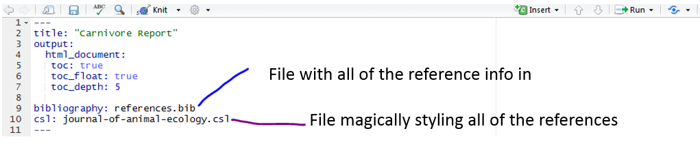

I remember being given some advice that many coders are probably aware of :
"If you use the same bit of code three times, write a function"
Recently I saw a tweet containing some similar advice...
"If you're asked to explain the same thing three times, write a blog"
And so here we are...
I've been asked recently by several members of my research group how I manage references given that I'm writing my thesis in R markdown. The answer is that I do so incredibly simply thanks to a couple of cool packages and addins that work with Rstudio.
Earlier this year I started using Zotero as my reference manager. I never really got on with Endnote, the software that is still being promoted as the go to by the university. To be honest I never really gave it that much of a chance largely because I resented the fact the if I wanted to use it outside of a university cluster I would have to pay a (seemingly extortionate) fee to be able to do so.
For a while I got away with manually referencing but it is time consuming and I knew that when it came to writing a thesis, and for easing the process of trying to publish papers I would need some help. I'm not quite sure how I stumbled across Zotero but I'm glad that I did. It's really easy to use, you can get a web browser add in which makes it really easy to add references to your library, and it's hosted online so you can transfer libraries easily between machines.
The main reason that I chose Zotero was because of it's integration with R through the citr package and the `better bib tex` extension for Zotero itself which allows me to link my entire zotero library to my R session so that all of my references are easily searchable. This means that it's really easily incorporated into my workflow when I'm writing reports (and slowly thesis chapters) in R markdown.
For each report I specify a reference file (.bib file extensions) in the yaml header of the markdown document, then when I want to add a reference to the text I use the `citr` addin (I've assigned it to the shortcut `Ctrl`+`Alt`+`c`) which magically links to my zotero library. I simply find the reference and as if by magic the information is added to my references file and the citation key appears in my text.
 demo from the awesome citr github page, go check it out to get started
demo from the awesome citr github page, go check it out to get started
A little tool like this is really great, it makes my day to day life easier and means that I'm not faffing around with references which (in theory) frees up more time for writing. I think that tools like this are really important, if we want to encourage open, transparent and robust science then it needs to be easy to do. Software like this, making it so simple to create referenced documents and reports is amazing and I'm hoping that in telling you all about how wonderful this way of working is might just convince you that you too can write papers in R, integrating code and analyses with the write up in a fully reproducible way!